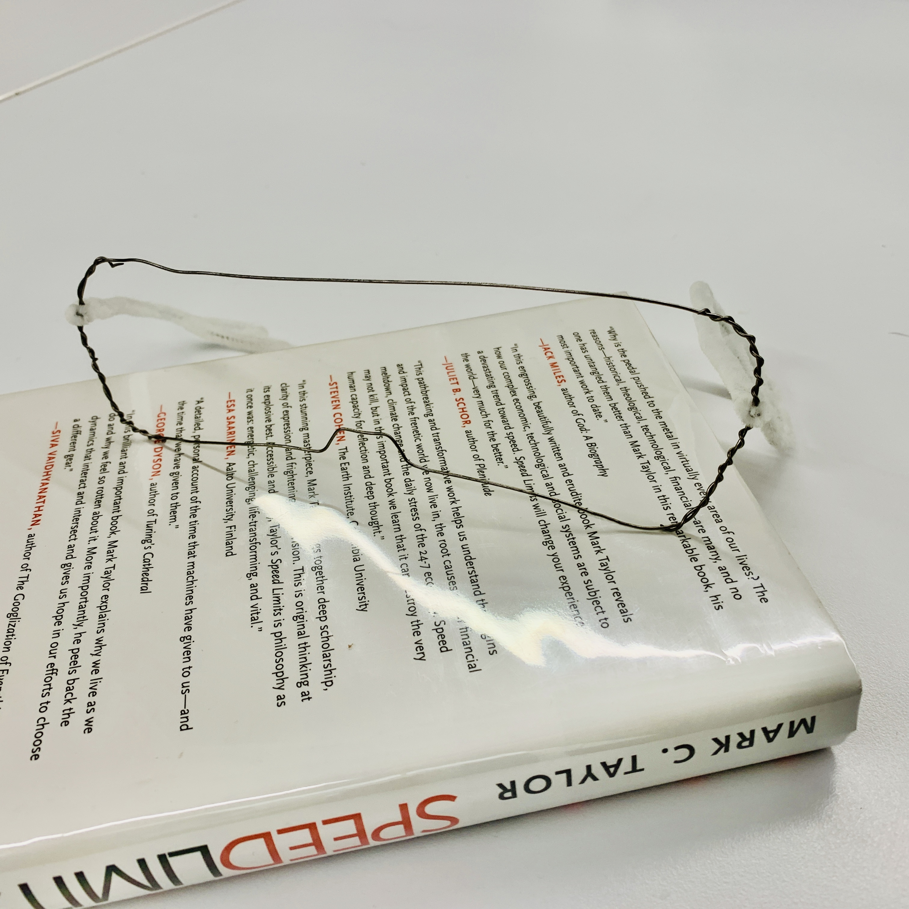
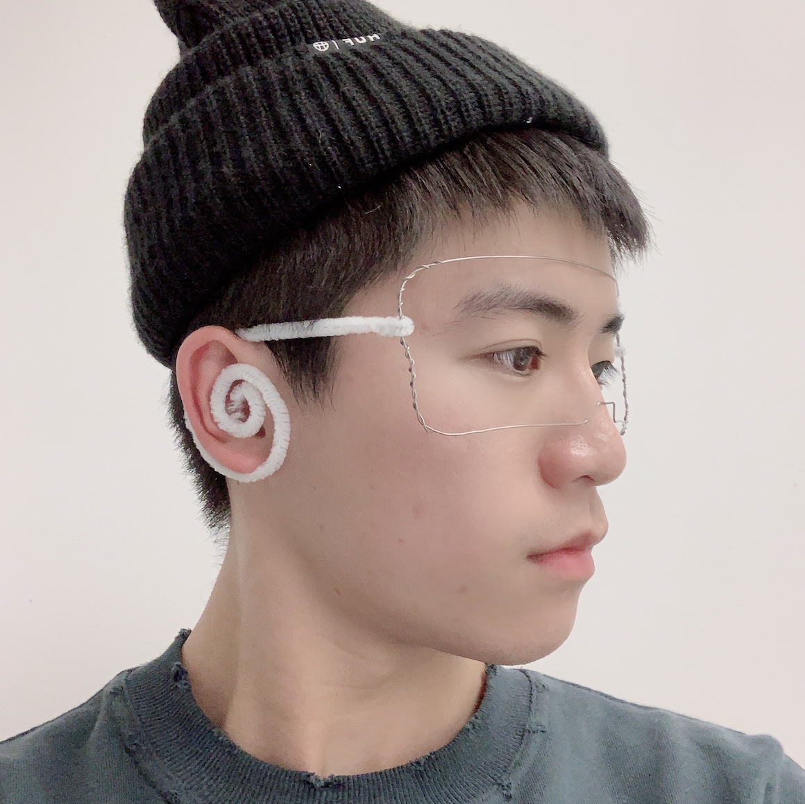
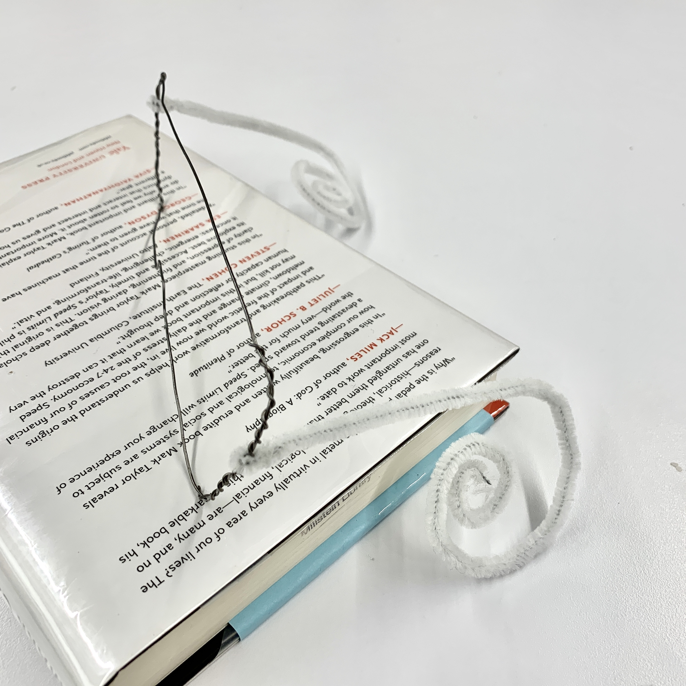
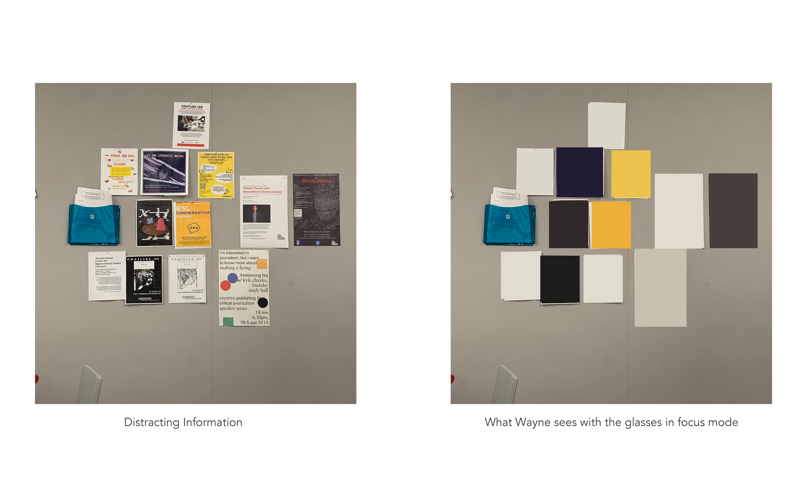
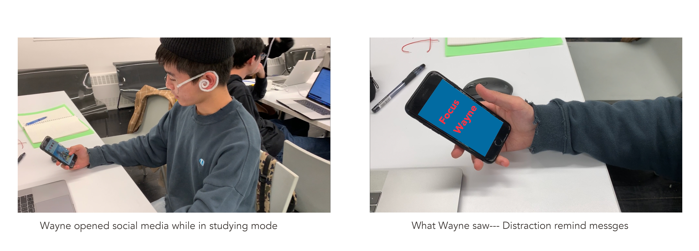
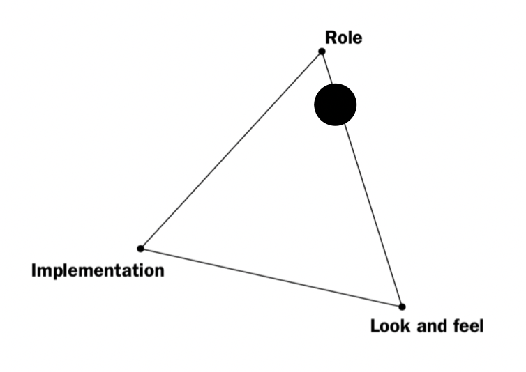
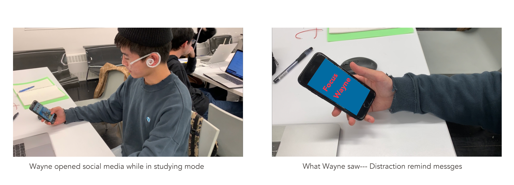
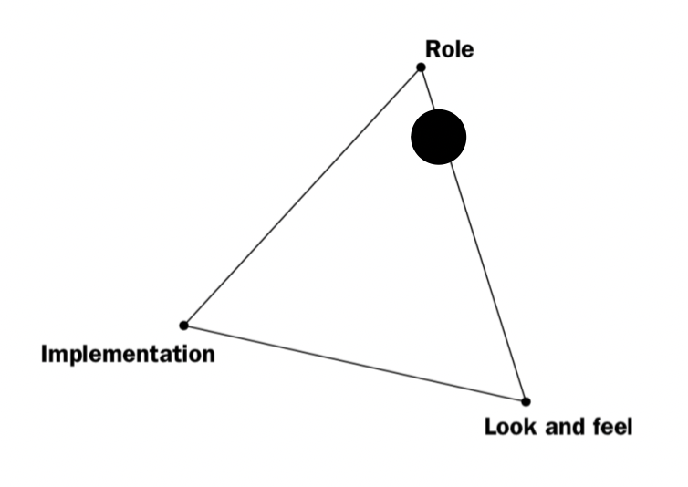
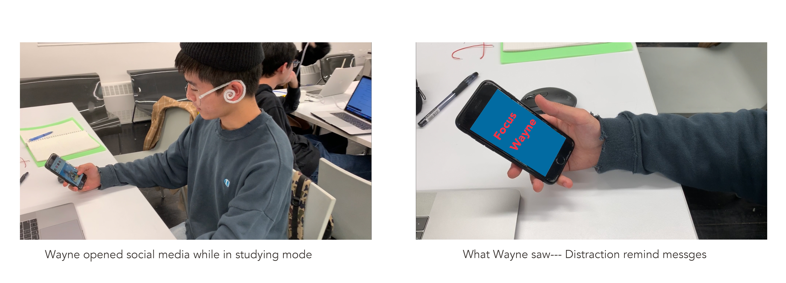
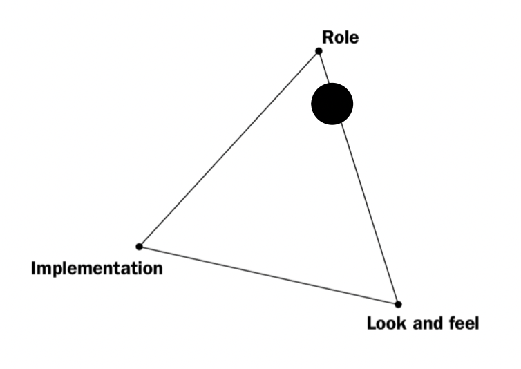

7 in 7 - Prototype 01
WEEK 9 - TUE, OCT 22TH, 2019Guiding Questions
- What's the sources of distraction in study and work context? Internal? External?
- What if we block those visual and audio information that would cause distraction?
- How to remind people when they are distracted?
Concept
A pair of glasses that could detect the attention of the user and visual and audio information around the user, filtering distracting information to help better focus.
Instead of being controlled by external distracting factors, you can now regain the power to focus in the present work.
Prototype





 



Posted in Major Studio 01

